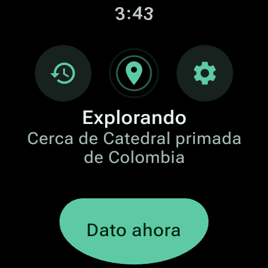
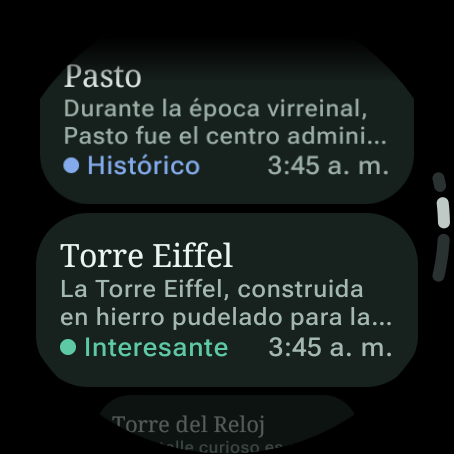
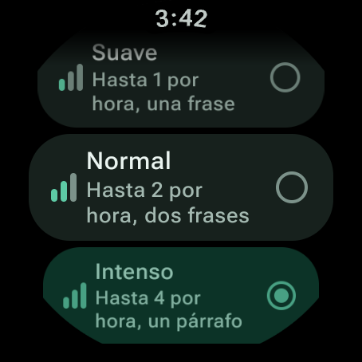
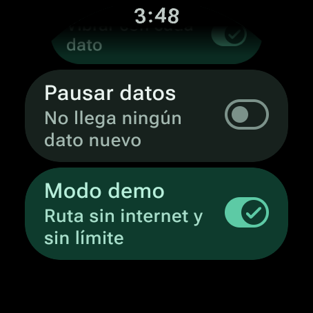
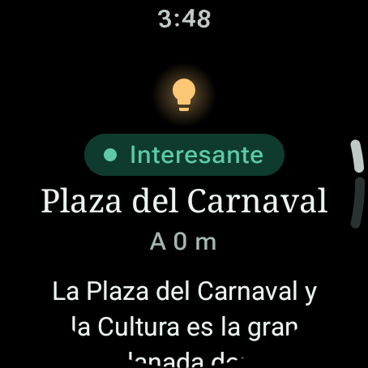

App standalone para Wear OS
ExplorIA
Pasa cerca de una plaza, una iglesia o un museo y tu reloj te cuenta un dato breve sobre él, generado con IA a partir de información real.
Funciona en cualquier ciudad del mundo. Tú eliges el tipo de dato (interesante, histórico, cómico, curioso o gastronómico) y con qué frecuencia aparece.
- Wear OS Android 11+
- Kotlin + Compose
- 130 tests unitarios

Qué hace
Un guía de bolsillo que solo habla cuando vale la pena
ExplorIA acompaña a la persona mientras camina. Cuando pasa cerca de un lugar emblemático, el reloj vibra y muestra un dato corto sobre él. Una calle, una casa o una tienda nunca disparan un dato automático.
-
Ubicación en tiempo real
Usa el GPS del reloj solo en primer plano, con el flujo de permisos de Android y pantallas diseñadas para sin permiso y sin GPS.
-
Solo lugares emblemáticos
Un lugar califica si tiene artículo en Wikipedia o etiquetas patrimoniales en OpenStreetMap y está a menos de 150–250 m.
-
IA que no inventa
El modelo recibe únicamente el texto real del lugar como contexto y responde en español, sin agregar nombres, fechas ni cifras.
-
Cinco tipos de dato
Interesante, Histórico, Cómico, Curioso y Gastronómico, con selección múltiple y un modo Aleatorio.
-
Tres intensidades
Suave (1 dato por hora, una frase), Normal (2 por hora) e Intenso (4 por hora, un párrafo corto). El botón Dato ahora responde siempre.
-
Historial, voz y modo demo
Historial por día con favoritos, lectura en voz alta, vibración propia y un Modo demo que recorre Pasto sin internet.
Galería
Diseñada para pantallas redondas
Capturas tomadas en el emulador oficial de Wear OS (Large Round, API 37). Hay más capturas, incluidas las de reloj pequeño y fuente grande, en auditorias/capturas.
-

Inicio: explorando en Bogotá -
Dato histórico en Popayán -
Voz, favorito, borrar y otro dato -

Historial de varias ciudades -

Tres niveles de intensidad -

Modo demo activo -

Pasto sin internet -
Cualquier lugar del mundo: París
Cómo funciona
De una coordenada a un dato en siete pasos
Cada paso vive en una clase con una sola responsabilidad. Los errores (sin internet, tiempo agotado, fallo de la IA, sin lugares) se modelan con clases selladas y cada uno tiene su pantalla diseñada.
-
Ubicación
ProveedorUbicacionFusedemite la coordenada actual comoFlow. -
Motor
MotorAutomaticorespeta la pausa y la política de intensidad y pide lugares cercanos. -
Fuentes
CadenaFuentesLugaresconsulta Wikipedia, Nominatim y el municipio, en orden. -
Filtros
FiltroRelevanciadescarta lo común o lejano;FiltroRepeticion, lo mostrado hace poco. -
Prompt
SelectorTipoDatoelige el tipo yPromptBuilderarma la instrucción. -
Caché o IA
GeneradorDatosConCachebusca en caché; solo si no existe llama a OpenAI. -
Dato
Se guarda en el historial (Room), el reloj vibra y se abre la pantalla Dato.